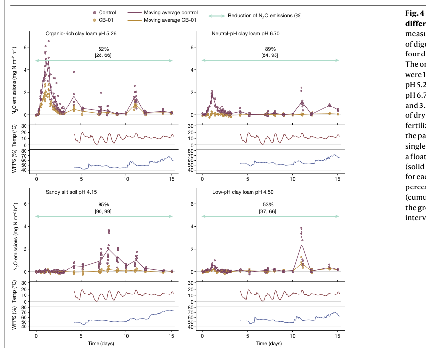

nosZ encodes nitrous-oxide reductase, the copper enzyme that reduces nitrous oxide to dinitrogen in the terminal N2O-reduction step of denitrification or nitrogen oxide respiration.
| GO Term | Evidence | Action | Reason |
|---|---|---|---|
|
GO:0004129
cytochrome-c oxidase activity
|
IEA
GO_REF:0000002 |
REMOVE |
Summary: REMOVE. NosZ is a nitrous-oxide reductase, not cytochrome-c oxidase. The specific nitrous-oxide reductase activity annotation is present.
Reason: The cytochrome-c oxidase activity term appears to come from a shared cytochrome oxidase subunit II-like copper-binding domain. The protein assignment, EC number, HAMAP model, and PANTHER subfamily all identify this sequence as nitrous-oxide reductase, so GO:0050304 is the correct MF. Family research confirms that PTHR42838 can conflate NosZ with cytochrome c oxidase subunit II because both carry CuA-related domains.
Proposed replacements:
nitrous-oxide reductase activity
Supporting Evidence:
file:RHOPA/nosZ/nosZ-uniprot.txt
RecName: Full=Nitrous-oxide reductase; EC=1.7.2.4.
file:RHOPA/nosZ/nosZ-uniprot.txt
PANTHER; PTHR42838:SF2; NITROUS-OXIDE REDUCTASE.
file:interpro/panther/PTHR42838/PTHR42838-deep-research-falcon.md
PTHR42838 family research separates true NosZ/N2OR proteins from cytochrome c oxidase subunit II homologs and warns against assigning oxidase activity to NosZ from CuA-domain similarity.
|
|
GO:0005507
copper ion binding
|
IEA
GO_REF:0000120 |
ACCEPT |
Summary: ACCEPT. Nitrous-oxide reductase is a copper enzyme.
Reason: NosZ binds copper cofactors required for nitrous-oxide reduction. UniProt notes six copper cations per subunit and identifies the CuA and CuZ centers. Falcon supports the conserved CuA/CuZ architecture but did not recover Q6N843-specific metal analysis.
Supporting Evidence:
file:RHOPA/nosZ/nosZ-uniprot.txt
Binds 6 Cu cations per subunit. Each subunit contains 2 copper centers, CuA and CuZ.
file:RHOPA/nosZ/nosZ-deep-research-falcon.md
Canonical NosZ enzymes contain CuA electron-entry and CuZ catalytic copper centers for N2O reduction; Q6N843-specific metal analysis was not recovered.
|
|
GO:0005509
calcium ion binding
|
IEA
GO_REF:0000120 |
KEEP AS NON CORE |
Summary: KEEP_AS_NON_CORE. This may reflect family-level cofactor information, but copper-dependent nitrous-oxide reduction is the core molecular function.
Reason: Calcium binding may be associated with the family/domain model, but the core experimentally meaningful cofactor for NosZ catalysis is copper. Keep as non-core rather than centering the review on this cofactor.
Supporting Evidence:
file:RHOPA/nosZ/nosZ-uniprot.txt
Binds 2 calcium ions per subunit.
|
|
GO:0016020
membrane
|
IEA
GO_REF:0000120 |
UNDECIDED |
Summary: UNDECIDED. NosZ is usually exported to the periplasm and can associate with membrane electron-transfer systems, but this broad membrane annotation is not resolved from the current automated evidence alone.
Reason: The protein is predicted to be exported to the periplasm by the Tat system. A broad membrane annotation may reflect associated respiratory electron-transfer context or family transfer rather than the location of the soluble catalytic protein itself, so this is left unresolved. Falcon supports periplasmic/Tat biology as family-level evidence but did not find a CGA009 localization experiment.
Supporting Evidence:
file:RHOPA/nosZ/nosZ-uniprot.txt
SUBCELLULAR LOCATION: Periplasm.
file:RHOPA/nosZ/nosZ-uniprot.txt
Predicted to be exported by the Tat system.
file:RHOPA/nosZ/nosZ-deep-research-falcon.md
NosZ is commonly Tat-exported to the periplasm for copper-center maturation, but no Q6N843-specific fractionation experiment was recovered.
|
|
GO:0042597
periplasmic space
|
IEA
GO_REF:0000120 |
ACCEPT |
Summary: ACCEPT. Bacterial NosZ functions as an exported/periplasmic denitrification enzyme.
Reason: Periplasmic localization is directly predicted in UniProt and is consistent with Tat export of bacterial NosZ nitrous-oxide reductases. Falcon supports this as canonical NosZ-family biology rather than direct CGA009 localization evidence.
Supporting Evidence:
file:RHOPA/nosZ/nosZ-uniprot.txt
SUBCELLULAR LOCATION: Periplasm.
file:RHOPA/nosZ/nosZ-deep-research-falcon.md
NosZ family literature supports periplasmic maturation after Tat export; Q6N843-specific localization was not directly resolved.
|
|
GO:0050304
nitrous-oxide reductase activity
|
IEA
GO_REF:0000120 |
ACCEPT |
Summary: ACCEPT. This is the specific molecular function of NosZ.
Reason: This is the precise EC-supported activity for the protein. UniProt names the sequence nitrous-oxide reductase, assigns EC 1.7.2.4, and PANTHER places it in a nitrous-oxide reductase subfamily. Falcon did not recover a purified R. palustris Q6N843 assay, so the support is EC/subfamily/family mechanism.
Supporting Evidence:
file:RHOPA/nosZ/nosZ-uniprot.txt
RecName: Full=Nitrous-oxide reductase; EC=1.7.2.4.
file:RHOPA/nosZ/nosZ-deep-research-falcon.md
NosZ-family literature supports N2O + 2 electrons + 2 protons to N2 and water as the core reaction; no Q6N843-specific kinetic assay was recovered.
|
|
GO:1902600
proton transmembrane transport
|
IEA
GO_REF:0000108 |
UNDECIDED |
Summary: UNDECIDED. The gene participates in respiratory electron transfer, but direct assignment of proton transmembrane transport to NosZ itself is not supported by the current local evidence.
Reason: NosZ is part of a respiratory chain at the pathway level, but the local evidence identifies this gene product as nitrous-oxide reductase rather than a proton-translocating complex. Do not infer direct proton transport from respiratory-chain participation alone.
Supporting Evidence:
file:RHOPA/nosZ/nosZ-uniprot.txt
Nitrous-oxide reductase is part of a bacterial respiratory chain that uses nitrate or nitrous oxide.
|
|
GO:0019333
denitrification pathway
|
IEA
GO_REF:0000041 |
ACCEPT |
Summary: ACCEPT. UniPathway correctly captures the pathway role of NosZ as the terminal nitrous-oxide-reduction enzyme in denitrification.
Reason: The denitrification pathway annotation follows directly from the enzyme role: NosZ catalyzes nitrous oxide reduction, the terminal step in denitrification. This is supported by conserved NosZ family/EC evidence and UniProt pathway mapping. Falcon supports the terminal N2O-sink step and notes that electron delivery/accessory requirements are context dependent.
Supporting Evidence:
file:RHOPA/nosZ/nosZ-uniprot.txt
PATHWAY: Nitrogen metabolism; nitrate reduction (denitrification); dinitrogen from nitrate: step 4/4.
file:interpro/panther/PTHR42838/PTHR42838-deep-research-falcon.md
NosZ/N2OR catalyzes N2O reduction to N2, the terminal step of denitrification, while cytochrome c oxidase subunit II is a distinct CuA-containing electron-entry subunit.
file:RHOPA/nosZ/nosZ-deep-research-falcon.md
NosZ is the only known biological N2O sink and the terminal respiratory reductase for N2O-to-N2 conversion; gene-neighborhood and regulation details for Q6N843 were not directly resolved.
|
The research report should be a detailed narrative explaining the function, biological processes, and localization of the gene product. Citations should be given for all claims.
You should prioritize authoritative reviews and primary scientific literature when conducting research. You can supplement
this with annotations you find in gene/protein databases, but these can be outdated or inaccurate.
We are specifically interested in the primary function of the gene - for enzymes, what reaction is catalyzed, and what is the substrate specificity? For transporters, what is the substrate? For structural proteins or adapters, what is the broader structural role? For signaling molecules, what is the role in the pathway.
We are interested in where in or outside the cell the gene product carries out its function.
We are also interested in the signaling or biochemical pathways in which the gene functions. We are less interested in broad pleiotropic effects, except where these elucidate the precise role.
Include evidence where possible. We are interested in both experimental evidence as well as inference from structure, evolution, or bioinformatic analysis. Precise studies should be prioritized over high-throughput, where available.
The UniProt accession Q6N843 is annotated as nitrous-oxide reductase (NosZ) (EC 1.7.2.4 in UniProt) from Rhodopseudomonas palustris strain CGA009, with domain architecture consistent with canonical bacterial NosZ enzymes (including the copper-binding cupredoxin-type folds and the C-terminal cytochrome-c–like region described by UniProt). The literature evidence base available here is largely from well-studied model denitrifiers (e.g., Pseudomonas spp., Paracoccus denitrificans) and recent environmental studies; these sources are used to functionally annotate Q6N843 by homology to the canonical NosZ family, not by direct biochemical purification of the R. palustris CGA009 protein in the retrieved corpus.
NosZ is the terminal respiratory oxidoreductase that catalyzes the reduction of nitrous oxide (N2O) to dinitrogen (N2) in microbial N2O respiration/denitrification. A widely cited stoichiometry is:
N2O + 2 H+ + 2 e− → N2 + H2O (zumft2006biogenesisofthe pages 1-2).
Because this reaction removes N2O, organisms that encode nosZ constitute the only known biological sink for N2O (intrator2024aquaticnitrousoxide pages 1-2, zumft2006biogenesisofthe pages 1-2).
NosZ is functionally specialized for N2O as the respiratory electron acceptor (i.e., the substrate being reduced) and produces N2 as the reduced end-product (zumft2006biogenesisofthe pages 1-2, intrator2024aquaticnitrousoxide pages 1-2). The defining activity is therefore N2O reduction (zumft2006biogenesisofthe pages 1-2).
Canonical bacterial NosZ is a multicopper enzyme operating as a homodimer. Each monomer contains two distinct copper centers:
A canonical copper stoichiometry is 6 Cu per monomer (2 in CuA + 4 in CuZ; ~12 Cu per dimer) (zumft2006biogenesisofthe pages 1-2, wunsch2005functionaldomainsof pages 6-7).
A key mechanistic point for functional annotation is that NosZ is a periplasmic enzyme in Gram-negative bacteria and is commonly exported as an apo-protein via the twin-arginine translocation (Tat) pathway, followed by post-translocational copper-center assembly in the periplasm (zumft2006biogenesisofthe pages 4-5, zumft2006biogenesisofthe pages 5-6). When NosZ is experimentally retained in the cytoplasm by disrupting Tat export (e.g., mutation of Tat components or the twin-arginine motif), the enzyme fails to acquire copper cofactors, supporting the periplasmic maturation model (zumft2006biogenesisofthe pages 4-5).
NosZ is the terminal step in denitrification-like respiratory chains, reducing N2O to N2 (zumft2006biogenesisofthe pages 1-2). In ecological terms, nosZ-containing organisms can either:
- be “complete denitrifiers” (carrying additional denitrification steps), or
- be “partial/non-denitrifiers” specializing in N2O consumption (intrator2024aquaticnitrousoxide pages 1-2, yoon2016nitrousoxidereduction pages 1-2).
In many denitrifiers, whole-cell N2O respiration depends on NosR, a membrane-associated iron–sulfur flavoprotein that is required to sustain in vivo NosZ activity and is implicated in electron transfer from the membrane redox pool to the periplasmic enzyme (wunsch2005functionaldomainsof pages 1-2, wunsch2005functionaldomainsof pages 5-6, wunsch2005functionaldomainsof pages 7-8). Experimental NosR variants lacking key domains can yield NosZ that remains catalytically active in vitro but cannot support whole-cell N2O respiration, consistent with an electron-supply/activation role in vivo (wunsch2005functionaldomainsof pages 7-8).
Some organisms lack nosR and instead have alternative electron-entry solutions (e.g., a c-type cytochrome fused to NosZ), underscoring that electron delivery to periplasmic NosZ is modular across bacteria (wunsch2005functionaldomainsof pages 7-8). This is relevant to Q6N843 because UniProt notes a cytochrome-c–related segment in the C-terminal section, consistent with known diversity in NosZ-associated electron-transfer architectures.
NosZ function depends critically on correct assembly of CuA and CuZ in the periplasm.
A major theme across experimental and review literature is that CuZ biogenesis requires a dedicated accessory apparatus:
In an experimental heterologous maturation system, coexpression of key nos genes (including nosRZ and nosDFY) was sufficient to produce active holo-NosZ, implicating NosD/F/Y as “obligatory” for Cu–S center assembly in that context (wunsch2003requirementsforcua pages 1-2).
Additional factors frequently cluster with nos genes and influence NosZ maturation/state:
Implication for Q6N843 annotation: even if the precise gene neighborhood in R. palustris CGA009 differs, the most evidence-supported expectation is that functional NosZ requires periplasmic copper delivery and CuZ sulfide insertion machinery, usually encoded near nosZ (zumft2006biogenesisofthe pages 5-6, zumft2006biogenesisofthe pages 1-2).
A 2024 review of aquatic nosZ diversity compiled >11,000 nosZ sequences and reinforced that nosZ segregates into two major clades with strong ecological patterning (intrator2024aquaticnitrousoxide pages 1-2). In that synthesis:
Whole-cell kinetic measurements show systematic differences between clades. In a widely used comparative study, the apparent half-saturation constants (Ks) for N2O were orders of magnitude lower for clade II organisms than for tested clade I organisms, consistent with higher apparent N2O affinity in clade II:
The same study reported ~1.5–1.8× higher growth yields for clade II isolates relative to clade I isolates under N2O-respiring conditions tested (yoon2016nitrousoxidereduction pages 1-2).
A 2024 soil microcosm study highlighted that the final denitrification step (N2O → N2) can be especially sensitive to pH and that clade II nosZ-containing organisms can dominate N2O reduction potential in certain acidic environments, often lacking nir genes (nirS/nirK) (sun2024phselectsfor pages 1-2). The study used controlled N2O feeding regimes and reported long lag times in some acidic/high-N2O microcosms, consistent with constraints on N2O-reduction activity under low pH (sun2024phselectsfor pages 1-2).
A 2024 field study demonstrated a practical route to reduce agricultural soil N2O emissions by delivering N2O-respiring bacteria (with NosZ activity) using organic waste (digestate) as a substrate/vector. The paper reports that fertilization with digestate containing approximately 6 × 10^9 cells mL−1 of the selected strain reduced N2O emissions by 50–95%, depending on soil type (hiis2024unlockingbacterialpotential media eb6c8c86). The field reductions are displayed in Figure 4, showing reductions of 52%, 89%, 95%, and 53% across soil types (hiis2024unlockingbacterialpotential media 670020dc).
These results exemplify a near-term “microbiome engineering” strategy: increasing in situ N2O sink capacity by introducing robust N2O-respiring populations rather than only trying to suppress N2O formation.
In a 2024 aquifer investigation with strong subsurface N2O production but limited surface emission, depth-resolved molecular analyses indicated that consumption of N2O near the surface correlated with enrichment of clade II N2O reducers, supporting a growing understanding that clade II NosZ guilds can strongly regulate net emissions in some systems (wunsch2005functionaldomainsof pages 5-6).
While the detailed engineering literature is broader than the evidence retrieved here, the mechanistic requirements summarized above (periplasmic maturation; dependence on copper delivery and accessory factors) motivate operational strategies that protect/enable NosZ activity (e.g., maintaining conditions supporting periplasmic copper cofactor assembly and avoiding environmental constraints that stall NosZ in inactive forms). The strong dependency of N2O sink capacity on community composition (clade I vs II) and environmental parameters (e.g., pH) is directly supported by 2024 studies (sun2024phselectsfor pages 1-2, intrator2024aquaticnitrousoxide pages 1-2).
On the basis of authoritative mechanistic review and primary genetics/biochemistry in model systems, the following are high-confidence annotations for UniProt Q6N843 NosZ:
The evidence retrieved does not directly report purified enzyme kinetics, transcriptional regulation, or gene-neighborhood experiments specifically for Q6N843 in R. palustris CGA009. Therefore, organism-specific annotations such as the exact electron donor pathway (specific cytochromes/quinol dehydrogenases used), operon composition in CGA009, and regulation under different growth modes should be treated as inferred from conserved NosZ biology rather than confirmed for this strain.
The following table consolidates the key functional and contextual annotations for Q6N843 nosZ.
| Annotation topic | Functional annotation for UniProt Q6N843 / nosZ in Rhodopseudomonas palustris CGA009 |
|---|---|
| Function / reaction (EC) | NosZ = nitrous-oxide reductase, the terminal respiratory oxidoreductase of denitrification/N2O respiration; catalyzes N2O + 2 H+ + 2 e− → N2 + H2O. Canonical EC in older literature is 1.7.99.6; UniProt assigns EC 1.7.2.4 for Q6N843. Overall function is consistent across sources and matches the UniProt description for Q6N843 (zumft2006biogenesisofthe pages 1-2, intrator2024aquaticnitrousoxide pages 1-2). |
| Substrate & products | Substrate: nitrous oxide (N2O). Products: dinitrogen (N2) and water. NosZ-bearing organisms are the only known biological sink for N2O (zumft2006biogenesisofthe pages 1-2, intrator2024aquaticnitrousoxide pages 1-2). |
| Electron entry / donors (general) | Electrons enter NosZ through the CuA center and are delivered to catalytic CuZ. In vivo, electron supply commonly depends on NosR, a membrane Fe-S/flavoprotein proposed to draw electrons from the quinol pool or a related membrane redox chain; some assays used artificial donors such as benzyl viologen, while whole-cell studies used organic donors such as acetate, citrate, or lactate depending on organism/experiment. Thus, Q6N843 is best annotated as a periplasmic respiratory reductase receiving electrons indirectly from membrane/periplasmic redox partners rather than binding a dedicated small-molecule donor itself (wunsch2005functionaldomainsof pages 7-8, wunsch2005functionaldomainsof pages 6-7, yoon2016nitrousoxidereduction pages 1-2, wunsch2003requirementsforcua pages 4-5, sun2024phselectsfor pages 1-2). |
| Cofactors / metal centers | NosZ is a multicopper homodimer. Each monomer carries CuA (binuclear, mixed-valent electron-transfer site) and CuZ (tetranuclear, sulfide-bridged catalytic Cu-S cluster). Canonical stoichiometry is 6 Cu per monomer / ~12 Cu per dimer. CuZ is the catalytic center for N2O reduction; CuA is the electron-entry site (zumft2006biogenesisofthe pages 1-2, wunsch2003requirementsforcua pages 1-2, wunsch2005functionaldomainsof pages 6-7, cua2010expressionofgenes pages 37-42). |
| Localization & export pathway | For canonical/clade I NosZ such as Q6N843, activity is periplasmic. NosZ is exported as an apo-protein by the Tat pathway via a twin-arginine leader; copper loading occurs post-translocationally in the periplasm. Cell fractionation and immunogold EM in model systems support periplasmic localization. Clade I enzymes generally have a Tat leader, whereas clade II enzymes may instead use a Sec leader (zumft2006biogenesisofthe pages 4-5, zumft2006biogenesisofthe pages 5-6, bennett2019assemblyofthe pages 35-39). |
| Key maturation / accessory proteins | NosR: membrane Fe-S/flavoprotein required for whole-cell N2O respiration; supports mature NosZ activity/electron delivery and can affect nosZ expression (wunsch2005functionaldomainsof pages 5-6, wunsch2005functionaldomainsof pages 1-2, wunsch2005functionaldomainsof pages 7-8). NosX: periplasmic FAD protein, often Tat-exported; linked to proper catalytic-center state and may participate in redox activation of NosZ (zumft2006biogenesisofthe pages 9-10, zumft2006biogenesisofthe pages 1-2). NosD/F/Y: ABC-type assembly system essential for CuZ biogenesis; strongest evidence supports delivery/handling of a sulfur species needed for the Cu-S catalytic center (zumft2006biogenesisofthe pages 5-6, wunsch2003requirementsforcua pages 1-2, bennett2019assemblyofthe pages 35-39). NosL: outer-membrane/periplasm-facing lipoprotein Cu(I) chaperone for periplasmic copper delivery to NosZ assembly (zumft2006biogenesisofthe pages 5-6, bennett2019assemblyofthe pages 35-39, zumft2006biogenesisofthe pages 1-2). NosA: Cu-responsive outer-membrane protein proposed to assist copper uptake under Cu limitation, but dispensable in some backgrounds (zumft2006biogenesisofthe pages 9-10). Sco/ScoP: Sco1-family Cu-binding protein implicated in Cu handling/oxidative protection; can be nonessential for NosZ maturation in some organisms (zumft2006biogenesisofthe pages 9-10, wunsch2003requirementsforcua pages 4-5). |
| Likely operon / family context for Q6N843 | Q6N843 matches the canonical NosZ family described in denitrifiers: a periplasmic, multicopper nitrous-oxide reductase typically embedded in a nos gene cluster containing core biogenesis functions such as nosRZDFYL, often plus nosX and sometimes nosA/sco-like functions. This fits UniProt domain architecture and annotation for R. palustris CGA009 (zumft2006biogenesisofthe pages 1-2, zumft2006biogenesisofthe pages 9-10, bennett2019assemblyofthe pages 35-39). |
| Clade I vs Clade II distinctions | Clade I: usually associated with more canonical/complete denitrifiers, often in Proteobacteria/Pseudomonadota; generally Tat-exported NosZ and classical nos operons. Clade II: phylogenetically broader, often in organisms lacking nirS/nirK and thus acting as specialist or partial N2O reducers; wider environmental distribution and commonly higher apparent N2O affinity. Q6N843 from R. palustris is most consistent with clade I/canonical NosZ based on domain architecture and organismal context (intrator2024aquaticnitrousoxide pages 1-2, sun2024phselectsfor pages 1-2, bennett2019assemblyofthe pages 35-39). |
| Clade I vs Clade II kinetics (Yoon 2016) | Whole-cell apparent half-saturation constants (Ks) for N2O separated clades: clade II Dechloromonas aromatica 0.324 ± 0.078, Anaeromyxobacter dehalogenans 1.34 ± 0.35; clade I Pseudomonas stutzeri 35.5 ± 9.3, Shewanella loihica 7.07 ± 1.13. Clade II strains also showed ~1.5–1.8-fold higher growth yields with N2O as electron acceptor in that study (yoon2016nitrousoxidereduction pages 1-2). |
| Real-world / engineering applications | NosZ is being actively exploited for N2O mitigation in soils, aquifers, and biotechnological nitrogen removal systems. A 2024 Nature field study using Cloacibacterium sp. CB-01 (a NosZ-based inoculant/vector in digestate) reported soil-specific N2O emission reductions of 52%, 89%, 95%, and 53% in Figure 4, with the paper summarizing an overall 50–95% reduction range and projecting potentially meaningful national-scale mitigation if deployed broadly (hiis2024unlockingbacterialpotential media 670020dc, hiis2024unlockingbacterialpotential media eb6c8c86). Recent 2024 studies also link surface N2O suppression to enrichment of clade II reducers in aquifers and show strong pH/oxygen-history effects on which NosZ guilds dominate environmental N2O sinks (wunsch2005functionaldomainsof pages 5-6, sun2024phselectsfor pages 1-2, intrator2024aquaticnitrousoxide pages 1-2). |
Table: This table condenses the key functional annotation points for UniProt Q6N843 NosZ, including reaction chemistry, localization, copper cofactors, accessory proteins, clade distinctions, and recent mitigation applications. It is useful as a compact evidence-backed reference for gene function and biological context.
References
(zumft2006biogenesisofthe pages 1-2): Walter G. Zumft. Biogenesis of the bacterial respiratory cua, cu-s enzyme nitrous oxide reductase. Journal of Molecular Microbiology and Biotechnology, 10:154-166, Apr 2006. URL: https://doi.org/10.1159/000091562, doi:10.1159/000091562. This article has 87 citations and is from a peer-reviewed journal.
(intrator2024aquaticnitrousoxide pages 1-2): Naomi Intrator, Amal Jayakumar, and Bess B. Ward. Aquatic nitrous oxide reductase gene (nosz) phylogeny and environmental distribution. Frontiers in Microbiology, May 2024. URL: https://doi.org/10.3389/fmicb.2024.1407573, doi:10.3389/fmicb.2024.1407573. This article has 19 citations and is from a peer-reviewed journal.
(wunsch2003requirementsforcua pages 1-2): Patrick Wunsch, Margitta Herb, Hagen Wieland, Ulrike M. Schiek, and Walter G. Zumft. Requirements for cua and cu-s center assembly of nitrous oxide reductase deduced from complete periplasmic enzyme maturation in the nondenitrifier pseudomonas putida. Journal of Bacteriology, 185:887-896, Feb 2003. URL: https://doi.org/10.1128/jb.185.3.887-896.2003, doi:10.1128/jb.185.3.887-896.2003. This article has 100 citations and is from a peer-reviewed journal.
(wunsch2005functionaldomainsof pages 6-7): Patrick Wunsch and Walter G. Zumft. Functional domains of nosr, a novel transmembrane iron-sulfur flavoprotein necessary for nitrous oxide respiration. Journal of Bacteriology, 187:1992-2001, Mar 2005. URL: https://doi.org/10.1128/jb.187.6.1992-2001.2005, doi:10.1128/jb.187.6.1992-2001.2005. This article has 143 citations and is from a peer-reviewed journal.
(zumft2006biogenesisofthe pages 4-5): Walter G. Zumft. Biogenesis of the bacterial respiratory cua, cu-s enzyme nitrous oxide reductase. Journal of Molecular Microbiology and Biotechnology, 10:154-166, Apr 2006. URL: https://doi.org/10.1159/000091562, doi:10.1159/000091562. This article has 87 citations and is from a peer-reviewed journal.
(zumft2006biogenesisofthe pages 5-6): Walter G. Zumft. Biogenesis of the bacterial respiratory cua, cu-s enzyme nitrous oxide reductase. Journal of Molecular Microbiology and Biotechnology, 10:154-166, Apr 2006. URL: https://doi.org/10.1159/000091562, doi:10.1159/000091562. This article has 87 citations and is from a peer-reviewed journal.
(yoon2016nitrousoxidereduction pages 1-2): Sukhwan Yoon, Silke Nissen, Doyoung Park, Robert A. Sanford, and Frank E. Löffler. Nitrous oxide reduction kinetics distinguish bacteria harboring clade i nosz from those harboring clade ii nosz. Applied and Environmental Microbiology, 82:3793-3800, Jul 2016. URL: https://doi.org/10.1128/aem.00409-16, doi:10.1128/aem.00409-16. This article has 263 citations and is from a peer-reviewed journal.
(wunsch2005functionaldomainsof pages 1-2): Patrick Wunsch and Walter G. Zumft. Functional domains of nosr, a novel transmembrane iron-sulfur flavoprotein necessary for nitrous oxide respiration. Journal of Bacteriology, 187:1992-2001, Mar 2005. URL: https://doi.org/10.1128/jb.187.6.1992-2001.2005, doi:10.1128/jb.187.6.1992-2001.2005. This article has 143 citations and is from a peer-reviewed journal.
(wunsch2005functionaldomainsof pages 5-6): Patrick Wunsch and Walter G. Zumft. Functional domains of nosr, a novel transmembrane iron-sulfur flavoprotein necessary for nitrous oxide respiration. Journal of Bacteriology, 187:1992-2001, Mar 2005. URL: https://doi.org/10.1128/jb.187.6.1992-2001.2005, doi:10.1128/jb.187.6.1992-2001.2005. This article has 143 citations and is from a peer-reviewed journal.
(wunsch2005functionaldomainsof pages 7-8): Patrick Wunsch and Walter G. Zumft. Functional domains of nosr, a novel transmembrane iron-sulfur flavoprotein necessary for nitrous oxide respiration. Journal of Bacteriology, 187:1992-2001, Mar 2005. URL: https://doi.org/10.1128/jb.187.6.1992-2001.2005, doi:10.1128/jb.187.6.1992-2001.2005. This article has 143 citations and is from a peer-reviewed journal.
(zumft2006biogenesisofthe pages 9-10): Walter G. Zumft. Biogenesis of the bacterial respiratory cua, cu-s enzyme nitrous oxide reductase. Journal of Molecular Microbiology and Biotechnology, 10:154-166, Apr 2006. URL: https://doi.org/10.1159/000091562, doi:10.1159/000091562. This article has 87 citations and is from a peer-reviewed journal.
(wunsch2003requirementsforcua pages 4-5): Patrick Wunsch, Margitta Herb, Hagen Wieland, Ulrike M. Schiek, and Walter G. Zumft. Requirements for cua and cu-s center assembly of nitrous oxide reductase deduced from complete periplasmic enzyme maturation in the nondenitrifier pseudomonas putida. Journal of Bacteriology, 185:887-896, Feb 2003. URL: https://doi.org/10.1128/jb.185.3.887-896.2003, doi:10.1128/jb.185.3.887-896.2003. This article has 100 citations and is from a peer-reviewed journal.
(sun2024phselectsfor pages 1-2): Yanchen Sun, Yongchao Yin, Guang He, Gyuhyon Cha, Héctor L Ayala-del-Río, Grizelle González, Konstantinos T Konstantinidis, and Frank E Löffler. Ph selects for distinct n2o-reducing microbiomes in tropical soil microcosms. ISME Communications, Jan 2024. URL: https://doi.org/10.1093/ismeco/ycae070, doi:10.1093/ismeco/ycae070. This article has 18 citations and is from a peer-reviewed journal.
(hiis2024unlockingbacterialpotential media eb6c8c86): Elisabeth G. Hiis, Silas H. W. Vick, Lars Molstad, Kristine Røsdal, Kjell Rune Jonassen, Wilfried Winiwarter, and Lars R. Bakken. Unlocking bacterial potential to reduce farmland n2o emissions. Nature, 630:421-428, May 2024. URL: https://doi.org/10.1038/s41586-024-07464-3, doi:10.1038/s41586-024-07464-3. This article has 143 citations and is from a highest quality peer-reviewed journal.
(hiis2024unlockingbacterialpotential media 670020dc): Elisabeth G. Hiis, Silas H. W. Vick, Lars Molstad, Kristine Røsdal, Kjell Rune Jonassen, Wilfried Winiwarter, and Lars R. Bakken. Unlocking bacterial potential to reduce farmland n2o emissions. Nature, 630:421-428, May 2024. URL: https://doi.org/10.1038/s41586-024-07464-3, doi:10.1038/s41586-024-07464-3. This article has 143 citations and is from a highest quality peer-reviewed journal.
(cua2010expressionofgenes pages 37-42): L Cua. Expression of genes linked to nox detoxification in aerobic bacteria. Unknown journal, 2010.
(bennett2019assemblyofthe pages 35-39): S Bennett. Assembly of the copper centres of nitrous oxide reductase in paracoccus denitrificans and connections to copper detoxification/trafficking. Unknown journal, 2019.

id: Q6N843
gene_symbol: nosZ
product_type: PROTEIN
status: DRAFT
taxon:
id: NCBITaxon:258594
label: Rhodopseudomonas palustris (strain ATCC BAA-98 / CGA009)
description: >-
nosZ encodes nitrous-oxide reductase, the copper enzyme that reduces nitrous
oxide to dinitrogen in the terminal N2O-reduction step of denitrification or
nitrogen oxide respiration.
existing_annotations:
- term:
id: GO:0004129
label: cytochrome-c oxidase activity
evidence_type: IEA
original_reference_id: GO_REF:0000002
review:
summary: >-
REMOVE. NosZ is a nitrous-oxide reductase, not cytochrome-c oxidase. The
specific nitrous-oxide reductase activity annotation is present.
action: REMOVE
reason: >-
The cytochrome-c oxidase activity term appears to come from a shared
cytochrome oxidase subunit II-like copper-binding domain. The protein
assignment, EC number, HAMAP model, and PANTHER subfamily all identify
this sequence as nitrous-oxide reductase, so GO:0050304 is the correct
MF. Family research confirms that PTHR42838 can conflate NosZ with
cytochrome c oxidase subunit II because both carry CuA-related domains.
proposed_replacement_terms:
- id: GO:0050304
label: nitrous-oxide reductase activity
supported_by:
- reference_id: file:RHOPA/nosZ/nosZ-uniprot.txt
supporting_text: 'RecName: Full=Nitrous-oxide reductase; EC=1.7.2.4.'
- reference_id: file:RHOPA/nosZ/nosZ-uniprot.txt
supporting_text: 'PANTHER; PTHR42838:SF2; NITROUS-OXIDE REDUCTASE.'
- reference_id: file:interpro/panther/PTHR42838/PTHR42838-deep-research-falcon.md
supporting_text: >-
PTHR42838 family research separates true NosZ/N2OR proteins from
cytochrome c oxidase subunit II homologs and warns against assigning
oxidase activity to NosZ from CuA-domain similarity.
- term:
id: GO:0005507
label: copper ion binding
evidence_type: IEA
original_reference_id: GO_REF:0000120
review:
summary: >-
ACCEPT. Nitrous-oxide reductase is a copper enzyme.
action: ACCEPT
reason: >-
NosZ binds copper cofactors required for nitrous-oxide reduction. UniProt
notes six copper cations per subunit and identifies the CuA and CuZ
centers. Falcon supports the conserved CuA/CuZ architecture but did not
recover Q6N843-specific metal analysis.
supported_by:
- reference_id: file:RHOPA/nosZ/nosZ-uniprot.txt
supporting_text: Binds 6 Cu cations per subunit. Each subunit contains 2 copper centers, CuA and CuZ.
- reference_id: file:RHOPA/nosZ/nosZ-deep-research-falcon.md
supporting_text: >-
Canonical NosZ enzymes contain CuA electron-entry and CuZ catalytic
copper centers for N2O reduction; Q6N843-specific metal analysis was not
recovered.
- term:
id: GO:0005509
label: calcium ion binding
evidence_type: IEA
original_reference_id: GO_REF:0000120
review:
summary: >-
KEEP_AS_NON_CORE. This may reflect family-level cofactor information, but
copper-dependent nitrous-oxide reduction is the core molecular function.
action: KEEP_AS_NON_CORE
reason: >-
Calcium binding may be associated with the family/domain model, but the
core experimentally meaningful cofactor for NosZ catalysis is copper. Keep
as non-core rather than centering the review on this cofactor.
supported_by:
- reference_id: file:RHOPA/nosZ/nosZ-uniprot.txt
supporting_text: Binds 2 calcium ions per subunit.
- term:
id: GO:0016020
label: membrane
evidence_type: IEA
original_reference_id: GO_REF:0000120
review:
summary: >-
UNDECIDED. NosZ is usually exported to the periplasm and can associate
with membrane electron-transfer systems, but this broad membrane
annotation is not resolved from the current automated evidence alone.
action: UNDECIDED
reason: >-
The protein is predicted to be exported to the periplasm by the Tat
system. A broad membrane annotation may reflect associated respiratory
electron-transfer context or family transfer rather than the location of
the soluble catalytic protein itself, so this is left unresolved. Falcon
supports periplasmic/Tat biology as family-level evidence but did not find
a CGA009 localization experiment.
supported_by:
- reference_id: file:RHOPA/nosZ/nosZ-uniprot.txt
supporting_text: 'SUBCELLULAR LOCATION: Periplasm.'
- reference_id: file:RHOPA/nosZ/nosZ-uniprot.txt
supporting_text: Predicted to be exported by the Tat system.
- reference_id: file:RHOPA/nosZ/nosZ-deep-research-falcon.md
supporting_text: >-
NosZ is commonly Tat-exported to the periplasm for copper-center
maturation, but no Q6N843-specific fractionation experiment was
recovered.
- term:
id: GO:0042597
label: periplasmic space
evidence_type: IEA
original_reference_id: GO_REF:0000120
review:
summary: >-
ACCEPT. Bacterial NosZ functions as an exported/periplasmic denitrification
enzyme.
action: ACCEPT
reason: >-
Periplasmic localization is directly predicted in UniProt and is
consistent with Tat export of bacterial NosZ nitrous-oxide reductases.
Falcon supports this as canonical NosZ-family biology rather than direct
CGA009 localization evidence.
supported_by:
- reference_id: file:RHOPA/nosZ/nosZ-uniprot.txt
supporting_text: 'SUBCELLULAR LOCATION: Periplasm.'
- reference_id: file:RHOPA/nosZ/nosZ-deep-research-falcon.md
supporting_text: >-
NosZ family literature supports periplasmic maturation after Tat export;
Q6N843-specific localization was not directly resolved.
- term:
id: GO:0050304
label: nitrous-oxide reductase activity
evidence_type: IEA
original_reference_id: GO_REF:0000120
review:
summary: >-
ACCEPT. This is the specific molecular function of NosZ.
action: ACCEPT
reason: >-
This is the precise EC-supported activity for the protein. UniProt names
the sequence nitrous-oxide reductase, assigns EC 1.7.2.4, and PANTHER
places it in a nitrous-oxide reductase subfamily. Falcon did not recover
a purified R. palustris Q6N843 assay, so the support is
EC/subfamily/family mechanism.
supported_by:
- reference_id: file:RHOPA/nosZ/nosZ-uniprot.txt
supporting_text: 'RecName: Full=Nitrous-oxide reductase; EC=1.7.2.4.'
- reference_id: file:RHOPA/nosZ/nosZ-deep-research-falcon.md
supporting_text: >-
NosZ-family literature supports N2O + 2 electrons + 2 protons to N2 and
water as the core reaction; no Q6N843-specific kinetic assay was
recovered.
- term:
id: GO:1902600
label: proton transmembrane transport
evidence_type: IEA
original_reference_id: GO_REF:0000108
review:
summary: >-
UNDECIDED. The gene participates in respiratory electron transfer, but
direct assignment of proton transmembrane transport to NosZ itself is not
supported by the current local evidence.
action: UNDECIDED
reason: >-
NosZ is part of a respiratory chain at the pathway level, but the local
evidence identifies this gene product as nitrous-oxide reductase rather
than a proton-translocating complex. Do not infer direct proton transport
from respiratory-chain participation alone.
supported_by:
- reference_id: file:RHOPA/nosZ/nosZ-uniprot.txt
supporting_text: Nitrous-oxide reductase is part of a bacterial respiratory chain that uses nitrate or nitrous oxide.
- term:
id: GO:0019333
label: denitrification pathway
evidence_type: IEA
original_reference_id: GO_REF:0000041
review:
summary: >-
ACCEPT. UniPathway correctly captures the pathway role of NosZ as the
terminal nitrous-oxide-reduction enzyme in denitrification.
action: ACCEPT
reason: >-
The denitrification pathway annotation follows directly from the enzyme
role: NosZ catalyzes nitrous oxide reduction, the terminal step in
denitrification. This is supported by conserved NosZ family/EC evidence
and UniProt pathway mapping. Falcon supports the terminal N2O-sink step
and notes that electron delivery/accessory requirements are context
dependent.
supported_by:
- reference_id: file:RHOPA/nosZ/nosZ-uniprot.txt
supporting_text: 'PATHWAY: Nitrogen metabolism; nitrate reduction (denitrification); dinitrogen from nitrate: step 4/4.'
- reference_id: file:interpro/panther/PTHR42838/PTHR42838-deep-research-falcon.md
supporting_text: >-
NosZ/N2OR catalyzes N2O reduction to N2, the terminal step of
denitrification, while cytochrome c oxidase subunit II is a distinct
CuA-containing electron-entry subunit.
- reference_id: file:RHOPA/nosZ/nosZ-deep-research-falcon.md
supporting_text: >-
NosZ is the only known biological N2O sink and the terminal respiratory
reductase for N2O-to-N2 conversion; gene-neighborhood and regulation
details for Q6N843 were not directly resolved.
references:
- id: GO_REF:0000002
title: Gene Ontology annotation through association of InterPro records with GO terms
findings: []
- id: GO_REF:0000041
title: Gene Ontology annotation based on UniPathway vocabulary mapping
findings: []
- id: GO_REF:0000108
title: Automatic assignment of GO terms using logical inference
findings: []
- id: GO_REF:0000120
title: Combined Automated Annotation using Multiple IEA Methods
findings: []
- id: file:RHOPA/nosZ/nosZ-uniprot.txt
title: UniProt record for nosZ
findings:
- statement: >-
UniProt/GOA identify Q6N843 as a nitrous-oxide reductase family protein.
- id: file:interpro/panther/PTHR42838/PTHR42838-deep-research-falcon.md
title: Falcon family deep research for PTHR42838 NosZ/cytochrome c oxidase subunit II
findings:
- statement: >-
Family research found that PTHR42838 mixes true nitrous-oxide reductases
with cytochrome c oxidase subunit II-like CuA proteins, explaining the
cytochrome-c oxidase over-annotation and supporting NosZ-specific
annotation when EC/subfamily evidence is present.
- id: file:RHOPA/nosZ/nosZ-deep-research-falcon.md
title: Falcon deep research for nosZ
findings:
- statement: >-
Falcon deep research for nosZ supports nitrous-oxide reductase activity
from EC 1.7.2.4, CuA/CuZ NosZ-family mechanism, and UniProt step 4/4
pathway mapping. It also notes that Q6N843-specific kinetics, regulation,
and exact electron-delivery partners were not recovered.
core_functions:
- description: >-
Catalyzes nitrous oxide reduction to dinitrogen as the terminal enzyme of
bacterial denitrification.
molecular_function:
id: GO:0050304
label: nitrous-oxide reductase activity
directly_involved_in:
- id: GO:0019333
label: denitrification pathway
supported_by:
- reference_id: file:RHOPA/nosZ/nosZ-uniprot.txt
supporting_text: >-
GOA includes nitrous-oxide reductase activity and UniPathway
denitrification pathway annotations for Q6N843.
- reference_id: file:interpro/panther/PTHR42838/PTHR42838-deep-research-falcon.md
supporting_text: >-
True NosZ proteins reduce N2O to N2 at CuA/CuZ centers, whereas
cytochrome c oxidase subunit II homologs are functionally distinct.
- reference_id: file:RHOPA/nosZ/nosZ-deep-research-falcon.md
supporting_text: >-
Falcon deep research supports NosZ as the terminal nitrous-oxide reductase
of denitrification/N2O respiration and supports removing cytochrome-c
oxidase activity as a shared CuA-domain over-annotation.
{kind=link}